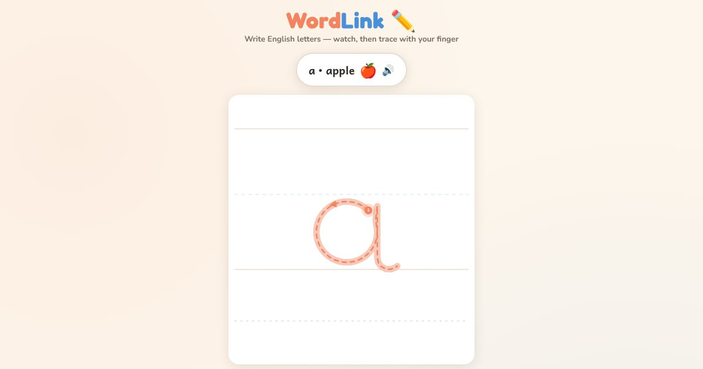

For teachers and tutors
About Trace the Letters with Your Finger
A letter tracing activity for adults who are learning to write English letters for the first time. The learner watches a letter being written, stroke by stroke, then traces it with a finger on the screen. The app shows where to start and which way to go, so the letter is formed the right way from the first try. Capital and small letters are both included, and there is no account to make and nothing to buy.

How to use it
- Open the page and choose a letter.
- Watch how the letter is written.
- Put your finger on the start dot and trace the letter.
- Try again until it feels easy.
Use it in a class
Hand out phones or tablets and open this page. Each student works at their own speed. The tutor can walk around and check that every student starts the strokes in the right place. For a whole class activity, use the Teacher Game.